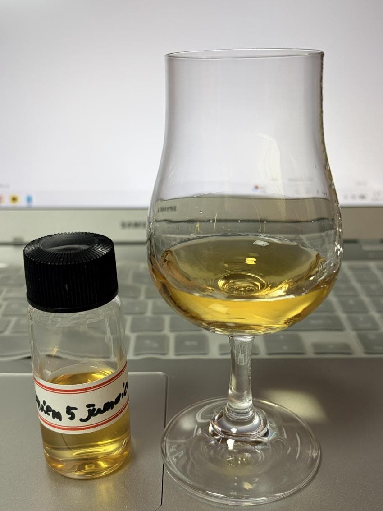

Requiem 5 Jamaican 15Y
주종 - Blended Jamaican Rum
증류소 - Hampden, Worthy Park, Long Pond, etc.
병입자 - Thompson Bros
도수 - 54.8%
숙성년수 - 15Y
캐스크 - Refill Barrels & Puncheons
기타 정보 - Full Tropical,
N - 휘발성 향, 바나나, 바나나잎, 에스테르, 레몬, 사과식초, 파인애플, 사탕수수 주스, 플라스틱, 리치, 망고스틴, 살구, 시드르, 흑당, 콜라시럽
강렬하게 몰아치기보다는 차분하고 묵직하게 이어지는 펑크와 향미가 느껴진다
신나, wd-40과 같은 스프레이류의 휘발성향이 점잖게 피어오른다
덜익어 푸른끼 도는 바나나와 바나나잎을 연상시키는 푸릇푸릇함과 과실발효시의 에스테르
레몬, 파인애플과 같은 시트러스함과 사과식초의 산미가 생기를 더하고
달콤한 사탕수수 주스와 락카나 도장시 느껴지는 펑키함이 함께 휘발된다
뒤이어 리치, 망고스틴과 같은 트로피컬한 달콤함이 점점 드러나고 과숙된 사과와 핵과류의 풍미도 느껴진다
시간이 흐르자 콜라시럽, 흑당, 캬라멜과 같은 직관적인 달콤함이 점점 두각을 드러낸다
전반적으로 특정향조가 부각되기 보다 밸런스가 좋다는 인상이다
P - 사과, 시드르, 레몬, 사과식초, 바나나, 바나나잎, 에스테르, 리치, 구아바, 스파이스, 플라스틱, 콜라시럽, 건초
꽤나 과실주스같은 가벼운 질감이다
처음 느껴지는 인상은 써머스비를 연상시키는 시드르의 단맛이 레몬, 파인애플, 사과식초의 산미들과 어우러진다
에스테르가 앞선 향미들과 어우러지면서 푸릇푸릇한 바나나, 바나나잎도 연상된다
휘발성향들이 중반부부터 두각을 보이며 구아바, 리치의 달콤함이 느껴지며
스파이스들이 조미료 역할을 하며 혀를 간질인다
플라스틱내음 콜라시럽을 비롯한 단맛, 건초와 드라이한 우디함이 후반부를 장식한다
F - 바나나잎, 건초, 차, 스프레이, 망고스틴, 콜라시럽, 시나몬, 탄닌
마른 건초를 연상케하는 드라이함과 차를 마신듯한 탄닌감과 약간의 비릿함
여전히 푸릇함이 삼키고나서도 남아있으며 시나몬, 망고스틴의 풍미 역시도 느껴진다
락카나 스프레이류의 펑키함이 길게 남아 마무리짓는다
총점 - 88.0
한줄평 - 점잖은 자메이카 신사들의 모임
댓글 4개